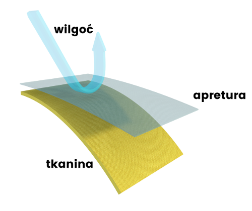
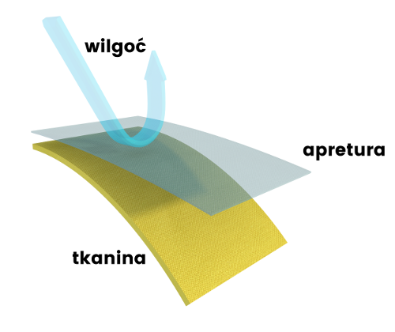

APRETURA DRY CARE
 

DRY CARE to nowoczesna apretura tworząca niewidzialną gołym okiem wodoodporną warstwę zewnętrzną. Chroni przed nasiąkaniem odzieży podczas przelotnych deszczów oraz przed zaplamieniem w wyniku na przykład rozlania jakiegoś napoju.
Zastosowanie warstwy DRY CARE polega na pokryciu nią powierzchni tkaniny, nie zmieniając przy tym jej kolorystyki ani struktury. Apretura nie ma również wpływu na parametry paroprzepuszczalności w przypadku zastosowaniu w odzieży membrany oddychającej.
Skuteczność DRY CARE oparta jest na procesie powleczenia nią włókien tkaniny w skali nanometrów. Dodatkowym plusem jest fakt, że dzięki pokryciu tkaniny apreturą DRY CARE staje się ona odporniejsza na zabrudzenia i łatwiejsza w czyszczeniu. Co najważniejsze, sama apretura jest całkowicie neutralna, a więc nie ma żadnego wpływu na zdrowie.